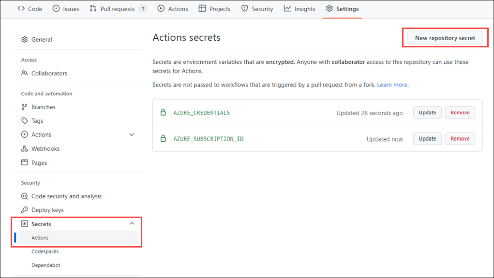

Storing credentials with GitHub Secrets
GitHub Secrets is a secure place to store sensitive data that workflow needs. For example in order to deploy to an Azure resource, the GitHub Action must have permission to access the resource. The example below shows, the location of GitHub Secrets portal: 
Example below is using credentials stored inside GitHub Secrets using creds: attribute of an Azure login Action: